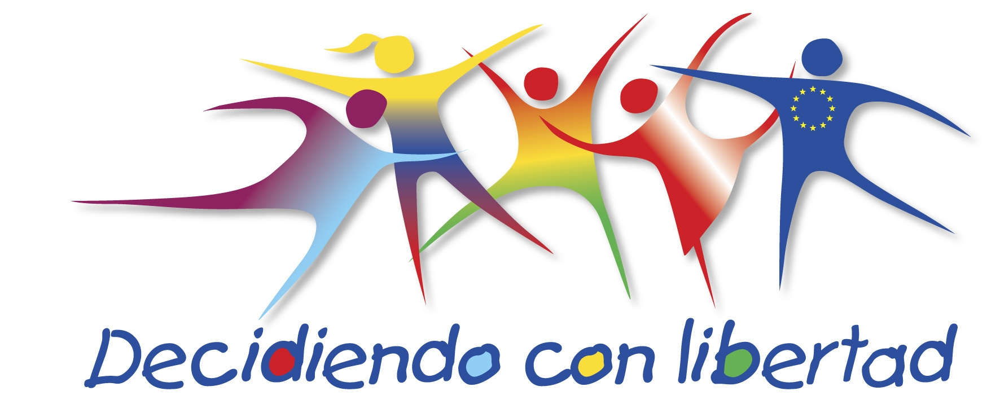

OBJETIVOS
- Invertir en las personas: Buena salud para todos. “Decidiendo con libertad: Ejercicio pleno, seguro y responsable de los derechos sexuales y reproductivos en adolescentes, jóvenes y mujeres en Bolivia, Perú y Ecuador”
- Socializar los proyectos planteados para encontrar puntos comunes de la ejecución y así coordinar sinergias y acciones conjuntas.
- Sensibilizar a representantes de las ONG y de las organizaciones de la sociedad civil, sobre los derechos a la salud sexual y reproductiva de los y las adolescentes.
- Realizar campañas y ferias de difusión y/o promoción de los derechos sexuales y reproductivos a partir de espacios civiles y escolarizados.
- Potenciar la incidencia en la formulación y aplicación de estrategias que favorecen los derechos, la salud reproductiva y sexual de adolescentes, jóvenes mujeres y hombres en Bolivia, Ecuador y Perú.
- Identificación y selección de ONG's y organizaciones de la sociedad civil en la temática de SHRH.
- Elaborar e implementar un Programa por país de sensibilización y capacitación a autoridades y funcionarios a nivel nacional, municipales, y sociedad civil agrupada.
- Elaborar estrategias de comunicación e información (una por país) dirigidas a la sociedad en general sobre las propuestas de la sociedad civil.
- Generar espacios de debate y plataformas para la formulación e implementación de políticas públicas y normativas con autoridades nacionales, municipales y sociedad civil.
- Conformar plataformas que cuenten con una Directiva, exclusivamente por jóvenes y adolescentes y las ONG’s que trabajan en la temática, se constituyen en Consejos Consultivos.
- Asistir técnicamente a los funcionarios de las oficinas de Servicios Legales Integrales Municipales, para que incorporen las demandas de la sociedad civil
- Sistematizar y difundir las consultas ciudadanas y propuestas generadas mediante un proceso de recolección, selección, priorización y sistematización y análisis de toda la información generada en los tres países participantes, para posteriormente, realizar la edición y publicación de un libro que será difundido ampliamente entre las organizaciones de la sociedad civil organizada, las ONG’s involucradas y el público en general. Se espera tener concluido el libro a finales del mes de junio 2012, ya que actualmente se está en el proceso de selección de la información.
